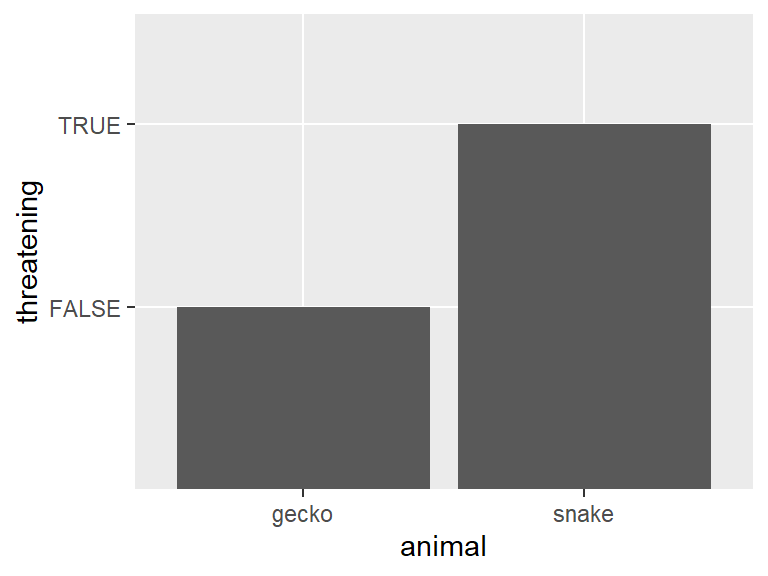

Analysis of class surveys
Executive summary
Question 1:
We analyzed survey responses from students in the PSTAT 197 Fall 2026 capstone cohort to see how their academic background relates to their technical confidence and project preferences. A simple linear regression of statistics comfort on the number of course categories selected found essentially no relationship (slope = −0.021, p = 0.726, R² = 0.25%). Statistics comfort stayed around 4 out of 5 regardless of how many courses a student had completed.
Question 2:
Research experience was associated with programming comfort in a sequential two-way ANOVA (p = 0.0251), although this test did not adjust for domain specialization. Neither domain specialization entered second (p = 0.2929) nor the interaction (p = 0.6266) was statistically significant.
Question 3:
K-means clustering on comfort scores and course count grouped students into three loose technical-confidence profiles: students confident in math and statistics but less so in programming, students with high confidence in all three areas, and students with lower confidence overall. That last group had completed more courses on average than the math- and statistics-confident group. These profiles were not associated with project-type preference (Fisher’s exact test, p = 0.587), and industry projects were the most popular choice in every cluster. Overall, our results suggest that hands-on research experience is more closely tied to students’ confidence than the number of courses they have taken, and that differences in confidence do not translate into different project preferences within this cohort.
Data description
Write a brief description of the dataset. Your description should cover how data were obtained, sample characteristics, and measurements taken. It does not need to be exhaustive, but sufficiently detailed to convey a clear high-level understanding of the dataset. You can utilize bullet points or tables if you feel it would help improve clarity.
Questions of interest
We sought to understand the association between the academic backgrounds of student’s within the PSTAT 197A coursework and their comfort with statistics. Whether research experience and domain specialization influence programming comfort, and how student profiles vary within said cohort. Our analysis aims to address:
- Does academic background predict how comfortable students are with statistics?
- Does programming comfort differ by research experience and domain specialization, and do those two factors interact?
- Can students be grouped into certain technical confidence backgrounds, and how do said background profiles relate to their preferences for industry or research-lab projects?
Findings
Question 1: Does academic background predict comfort with statistics?
In order to examine the relationship between student’s academic background/ statistics comfort we conducted a simple linear regression using the # of course categories selected as the given explanatory variable and student’s self-reported statistics comfort as our response variable. The data we utilized is pulled from 51 students who consented to share their background.
Figure 1: Distribution of statistics comfort level across the number of courses taken, fitted regression line (red)
In Figure 1, statistics comfort rating remained around 4 across the different course counts, with no indication of increasing/decreasing direction. The fitted regression line, shown in red, displays a very slight negative association with a slope coefficient of -0.2121. This suggests that each additional course category selected is associated with an estimated 0.021-point decrease in statistics comfort, but said relationship is not statistically significant at p = 0.726. Moreover, the model’s R^2 shows that it explains around 0.25% of the variation in statistics comfort. In essence, our findings provide little evidence that the # of course categories selected predicts student’s comfort with statistics within this cohort. It is important to note that some categories cover multiple courses, so our count may not fully reflect student’s coursework.
Question 2: Does programming comfort differ by research experience and domain specialization, and do those two factors interact?
We used a two-way ANOVA to examine how self-rated programming comfort varies by research experience and domain specialization, including an interaction term to assess whether the association with one factor depends on the other. Both factors had three categories: No, Unsure, and Yes. After merging the background and interest surveys and excluding incomplete observations, the analysis included 49 students.
Df Sum Sq Mean Sq F value Pr(>F)
research 2 3.997 1.9985 4.039 0.0251 *
domain_specialization 2 1.252 0.6261 1.265 0.2929
research:domain_specialization 3 0.872 0.2908 0.588 0.6266
Residuals 41 20.287 0.4948
---
Signif. codes: 0 '***' 0.001 '**' 0.01 '*' 0.05 '.' 0.1 ' ' 1Interpretation:
The two-way ANOVA showed a statistically significant result for research experience in the sequential analysis, F(2, 41) = 4.039, p = 0.0251. However, this overall test does not identify which research experience groups differ. Domain specialization was not statistically significant when entered after research experience, F(2, 41) = 1.265, p = 0.2929.
The interaction between research experience and domain specialization was also not statistically significant, F(3, 41) = 0.588, p = 0.6266. Thus, there is insufficient evidence that differences in programming comfort across research experience groups vary by domain specialization. This does not establish that no interaction exists, particularly given the small sample sizes in several groups.
Because the group sizes are unequal, the sequential main-effect tests may depend on the order of the factors. The research experience result, which was tested first, should not be interpreted as an effect adjusted for domain specialization.

Interpretation:
The boxplot shows that students with research experience have higher median programming comfort than those without research experience within each domain specialization category. Students reporting both research experience and domain specialization have the highest median comfort score, approximately 4.5, although their scores also show considerable variation.
The distributions overlap across several groups. Some boxes collapse to a single line because of limited variation in scores or very small group sizes. No box appears for students who selected “Unsure” for both factors because this combination has no observations.
These visual patterns suggest an association between research experience and programming comfort, but the plot alone does not establishstatistically significant differences or an interaction.
Question 3: Are there natural “student profiles” in the class?
To see whether students fall into distinct technical-confidence profiles, we ran a k-means cluster analysis on four variables: students’ self-reported comfort with programming, mathematics, and statistics, and the number of course categories they selected. We standardized all four variables so that no single one dominated the clustering, and chose the number of clusters using the elbow and silhouette methods. We then compared the resulting clusters with students’ project-type preference (industry, research lab, or no preference) to see whether confidence profiles relate to the kind of project students want. The data comes from the 49 students who consented to share both their background and their project interests.


| cluster | both | ind | lab |
|---|---|---|---|
| 1 | 3 | 16 | 4 |
| 2 | 5 | 8 | 1 |
| 3 | 3 | 8 | 1 |
The elbow plot (Figure 2) shows the largest decreases in within-cluster sum of squares from one to two clusters and from two to three, with smaller gains after that, which suggests two or three clusters. Average silhouette width (Figure 3) stayed between about 0.26 and 0.33 for every k tested and rose slightly as k increased. That rise reflects smaller clusters, not clearly better separation. We chose three clusters because it fell within the range suggested by the elbow plot and produced profiles that were easy to interpret, with every group large enough to describe. The silhouette width for three clusters was 0.256, which indicates that the groups overlap and should be read as general tendencies rather than sharply distinct categories.
In Figure 4, the clusters are plotted on the first two principal components, which together explain about 73% of the variation in the data. The first component (46.8%) reflects overall comfort across programming, mathematics, and statistics. The second (25.7%) reflects the number of courses completed. As shown in Table 1, the three clusters can be described as follows:
Cluster 1 (n = 23): Math- and statistics-confident. These students reported high comfort in mathematics (4.35) and statistics (4.22) but lower comfort in programming (3.52). They had completed the fewest courses on average (6.2).
Cluster 2 (n = 14): Lower confidence overall. These students reported the lowest comfort in all three subjects (programming 3.21, mathematics 3.00, statistics 3.36), even though they had completed an average of 7.3 courses.
Cluster 3 (n = 12): High confidence across the board. These students reported the highest comfort in all three subjects (programming 4.58, mathematics 4.42, statistics 4.92) and had completed the most courses (7.9).
Table 2 compares the clusters with students’ project-type preference. Industry projects were the most common choice in every cluster (70%, 57%, and 67% respectively), and few students in any cluster preferred research-lab projects. A Fisher’s exact test found no evidence of an association between cluster membership and project preference (p = 0.587). In essence, students in this cohort can be loosely grouped into three technical-confidence profiles, but those profiles do not appear to shape whether students prefer industry or research-lab projects. Notably, the lower-confidence cluster had completed more courses than the math- and statistics-confident cluster, which echoes our Question 1 finding that coursework alone does not predict comfort. It is important to note that the comfort scores are ordinal and take only four values, which k-means treats as continuous, and that our sample of 49 students limits how stable these clusters are.
Code chunks
Insert code chunks using the Insert drop-down menu or ctrl + alt + I . By default in this document, codes will not be shown but results will. If you want to change this behavior, add the chunk option echo: true as below.
my_df <- tibble(animal = c('snake', 'gecko'),
threatening = c(TRUE, FALSE))
my_df# A tibble: 2 × 2
animal threatening
<chr> <lgl>
1 snake TRUE
2 gecko FALSE Code chunks will be executed in order when the document is rendered, so packages should be loaded at the very beginning of the document
Rendering tables in markdown
Several functions exist for converting dataframes to markdown tables for nice display. A simple one from the knitr package is knitr::kable() .
| animal | threatening |
|---|---|
| snake | TRUE |
| gecko | FALSE |
Figures
To include any figures not generated by code chunks, use Insert > Figure / Image or  .
Most of the time code chunks producing plots will render fine. However, to adjust sizing or alignment, use the chunk options fig-width and fig-height . Captions can be added with fig-cap .